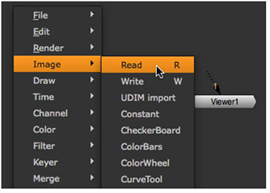
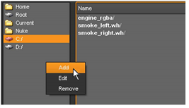
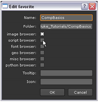
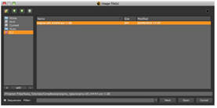
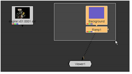
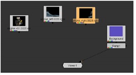

对于这个项目，您需要为前景元素和背景板导入一些图像序列。
| 1。 | 单击节点图中的空白区域。这确保没有选择任何节点。 |
| 2. | 单击节点图上的鼠标右键，然后选择 图像 > 阅读 (或按 R 在 Nuke 窗口)。 |
提示: 按 R 选中现有读取节点后，将在该节点指定的位置打开文件浏览器。

出现文件浏览器。这是您选择要导入的图像文件的位置。当您从此窗口浏览目录时, Nuke 将按顺序编号的文件显示为目录中的一项。
| 3. | 浏览到 Nuke _ 教程/CompBasics/ 目录。 |
| 4. | 将书签添加到此目录。在文件浏览器窗口左侧的列表上单击鼠标右键，然后选择 添加 从菜单上。 |

| 5. | 键入书签的名称或保留默认值，即目录名称。然后单击 好 . |

| 6. | 打开 Engine_rgba 目录中，选择 Engine.V01.#.exr 图像序列，然后单击 打开 . |

Nuke 检索图像序列并将其显示为节点上的缩略图。读取控制面板显示图像的分辨率和帧范围。
注意: Nuke 从原始格式读取图像，但读取节点使用线性颜色空间输出结果。如有必要，可以在读取节点的控制面板中更改 Colorspace 选项，或插入 颜色 > 色彩空间 节点来选择要输出或计算的颜色方案。
| 7. | 围绕背景和渐变节点拖动选框 (拖动时按住鼠标左键) 以选择它们。然后将它们向右拖动，为其他节点腾出空间。 |

| 8。 | 选择 图像 > 阅读 从右键单击菜单导入另一个图像序列。使用文件浏览器选择存储在中的图像序列 Nuke _ 教程/CompBasics/smoke_left.wh/smoke_left.#.rgba . |
| 9. | 添加一个读取节点并检索存储在中的图像序列 Nuke _ 教程/CompBasics/smoke_right.wh/smoke_right.#.rgba |

| 10. | 如上所示，排列节点，以允许一些空间为节点树创建连接。 |
|
|